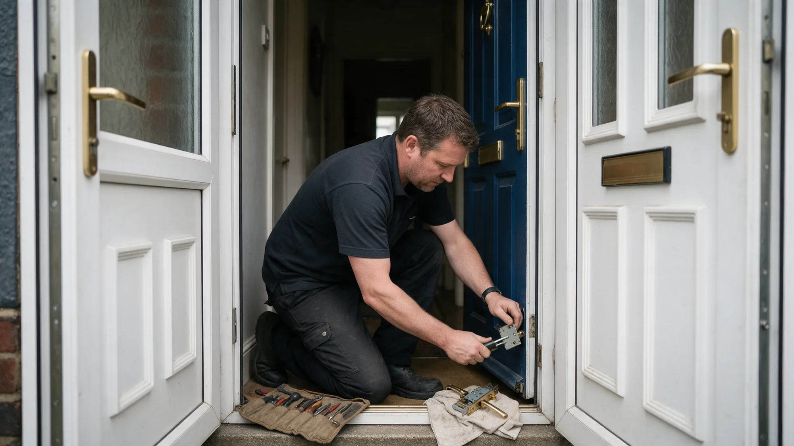
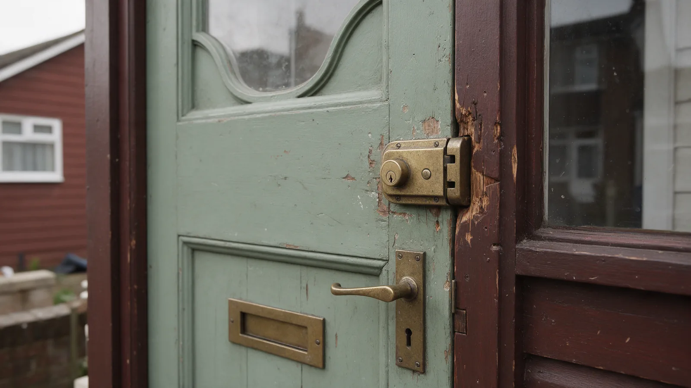
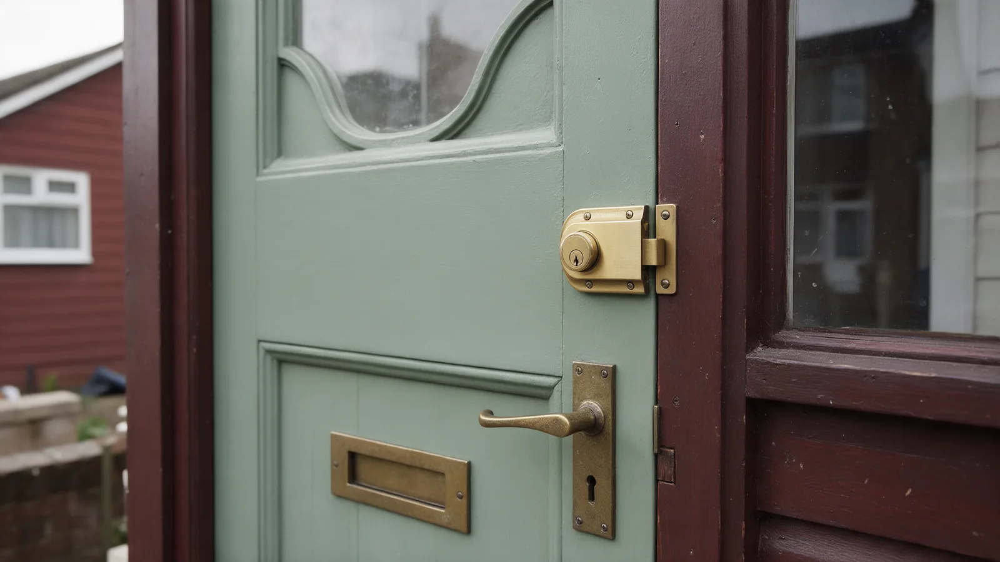
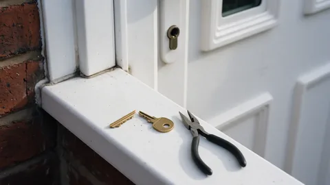
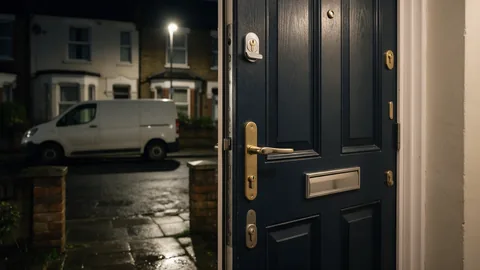
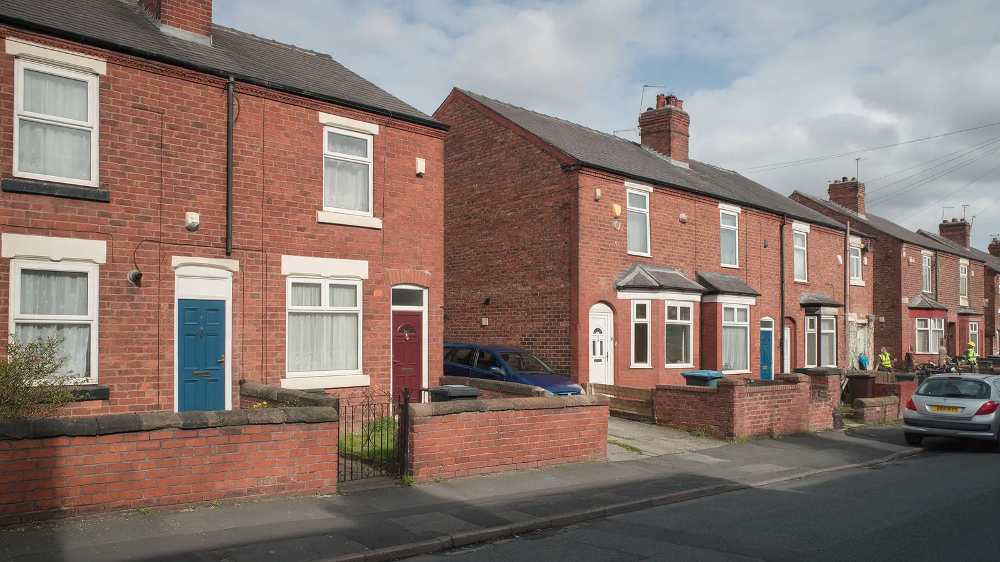
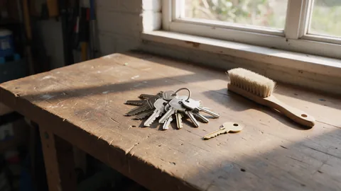

Locksmiths · Salford and Trafford
Back in your own house.
Usually without a mark on it.
Lockouts, lost and snapped keys, lock changes, uPVC doors that will not lock, repairs after a break in, window locks and keys cut while you wait. Told straight before anybody picks up a tool.
What we do
Six kinds of job.
 Generated photo
Generated photoEmergency lockouts
Shut out of your own house, keys lost or snapped off in the lock. Opened without damage wherever we can, and a straight word first if we cannot.
 Generated photo
Generated photoLock changes and upgrades
New cylinders, new mortice locks, new keys. The usual reasons are moving in, losing a set, or a lock that has got stiff enough to worry you.
 Generated photo
Generated photouPVC door lock and mechanism repairs
The door you have to lift and lean on to lock. Usually the gearbox, the alignment or the cylinder, and all three are a repair rather than a new door.
 Generated photo
Generated photoLock repairs after a break in
Secure tonight first, then put right properly: the lock, the keeps, the frame. Boarding up where a door or window will not shut.
 Generated photo
Generated photoWindow locks
Key operated window locks, handles and the strips inside the frame. The cheapest part of a house to secure and the one most often left.
 Generated photo
Generated photoSafes and key cutting
Keys cut from a blank while you wait, and domestic safes fitted where they are actually worth having. Where it goes matters more than the safe.
How it works
Four steps, no mystery.
You tell us what the door is doing
A call, the chat box or the form. Which door, what kind of lock if you know, whether you are stood outside it right now, and your postcode.
We try the easy things first
Starting with whether another door is open and whether anybody else holds a key. Plenty of lockouts end before anybody gets in a van.
We open it, or we say why not
Opened without damage wherever that is possible. Where it is not, you hear what has to be sacrificed and why before it happens.
You get a working door back
New parts fitted where they are needed, keys tried in the lock before we leave, and a plain note of what was done Sample.


Illustrative, not a real job. Both pictures were generated for this demo from the same door, once tired and scarred and once put right, to show what a repair looks like next to a replacement.
Before and after
Most doors do not need replacing.
Drag the slider. On the left, a front door with a worn lock and a frame that has been forced at some point and never properly repaired. It is the sort of door people are told needs replacing.
On the right, the same door. New lock, the damaged timber let in and made good, keep plate into something solid. It is a morning's work rather than a new door, and it is the answer far more often than people expect.
See the rest of the workOur work
Sample jobs.
12 jobs shown
 Generated photoHandle set and cylinder changedEccles · sampleGenerated photoIn without a mark on the doorStretford · sample
Generated photoHandle set and cylinder changedEccles · sampleGenerated photoIn without a mark on the doorStretford · sample
Generated photoKey snapped in the cylinderSale · sample
Generated photoBack off a late shift, no keysUrmston · sampleGenerated photoCylinders changed on moving daySwinton · sample Generated photoKeys cut while you waitEccles · sampleGenerated photoGearbox out, door locking againUrmston · sample
Generated photoKeys cut while you waitEccles · sampleGenerated photoGearbox out, door locking againUrmston · sample Generated photoHandle that had stopped liftingSale · sampleGenerated photoFrame and keep put backStretford · sample
Generated photoHandle that had stopped liftingSale · sampleGenerated photoFrame and keep put backStretford · sample Generated photoBoarded up for the nightEccles · sampleGenerated photoWindow locks downstairsSwinton · sampleGenerated photoSafe fitted in a garageSale · sample
Generated photoBoarded up for the nightEccles · sampleGenerated photoWindow locks downstairsSwinton · sampleGenerated photoSafe fitted in a garageSale · sampleEvery job here is a made up sample with a generated picture. Tap one to see it bigger.
Where we work
Salford and Trafford.
Based in Salford and Trafford Sample. These are the towns we cover most. Coverage is a sample for this demo. A bit outside it? Ask anyway, we often are.

Generated photoWhat people say
Sample reviews.
Sample review
Pulled the door shut with the keys on the side. He had it open without a mark on it and did not make me feel daft about it.
Nadia, Stretford
Sample review
Our front door needed a shove and a lift to lock for about a year. Turned out to be the gearbox, not the whole door, which was a relief.
Owen, Eccles
Sample review
Came out after we got broken into, boarded the back door the same evening and came back to do it properly once the police had been.
Priya, Sale
Sample review
Moved in on the Friday, both doors on one key by Friday dinner. He also told me which window locks were worth doing and which were fine.
Mark, Urmston
Made up for this demo. Latchwick does not exist, so neither do its customers.
Questions
What people ask us first.
Can you get me in without damaging the door?
Most of the time, yes. On an ordinary front door the aim is always to open it without touching the door, the frame or the lock, and that is how the majority of lockouts end.
Where that is not possible, the thing that gets sacrificed is the cylinder, which is a part rather than a door, and it gets swapped for a new one while we are stood there. Either way you get told what we are about to do and why before anybody picks up a tool. If somebody turns up and goes straight for a drill without a word, that is a bad sign in any trade.
How quickly can you get here?
Ring and you will get a straight answer, including when the honest answer is first thing in the morning. We are not going to print a time on a web page, because it would be a number we made up.
What makes a difference is what you tell us on the phone. Stood outside in the rain, a child or an animal shut in, or a door that will not lock at all tonight: say so, and it changes where you sit in the order of the day.
My uPVC door will not lock, can you fix it?
Nearly always, and nearly always without a new door. Three things go wrong on a uPVC door: the gearbox inside the edge gives up, the door drops so the hooks no longer meet the keeps, or the cylinder wears until the key will not turn it.
All three are parts and adjustment. The one thing we would say is not to keep forcing it. A handle you have to lift hard is what breaks the gearbox in the first place, and a door that was a half hour adjustment in March can be a locked shut door you cannot get through in July.
Should I change my locks after moving house?
We would. Not because anybody is out to get you, but because you have no idea how many keys to that house exist. The old owners, their family, a cleaner, a builder, somebody from two owners ago.
Changing the cylinders is a small job on most doors and it draws a line under all of it. If your home insurance wording says something about the sort of lock it wants on an outside door, read it out to us and we will fit to what it says rather than guess.
Can you board up after a break in?
Yes. When a door or a window will not shut and lock, the first job is making the house safe for the night, and that often means a board over the opening rather than a repair on the spot.
Two things worth knowing. Ring the police before anything gets touched, because your insurer will want the crime number. And take photographs of the damage before anybody covers it over, for the same reason.
Do you do car keys?
No, and we would rather say so than have somebody wait in for us. Vehicle keys need the coding kit for the make and that is a different trade.
Houses, flats, garages, sheds, gates, outbuildings, windows, padlocks and the odd filing cabinet is where we are actually useful.
General guidance written for this demo, not advice on your door.
Advice
Worth reading first.
Locked out: what to do first
Five minutes of checking before you ring anybody, and the one thing that stops a lockout turning into a new door.
Generated photoWhy a uPVC door stops locking
If you have to lift the handle hard or lean on the door, it is telling you something. Here is what, and what it costs you to ignore it.

Generated photoChanging locks when you move house
Nobody knows how many keys to a house are out there. Here is how to think about it on the week you move in.
About this demo
What this demo shows.
Latchwick is not a real firm. The site is here to show a locksmith firm what Clockwork AI builds, in six parts.
No prices here. What it would cost for your firm is a conversation, not a web page. The Clockwork number is in the bar at the top.
Locked out, or a door that will not lock?
Tell us which door it is and your postcode and we will book someone in. If you are stood outside it right now, use the urgent line instead.